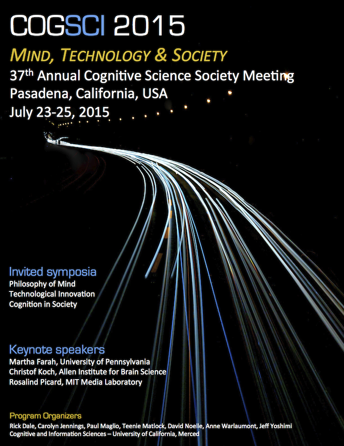
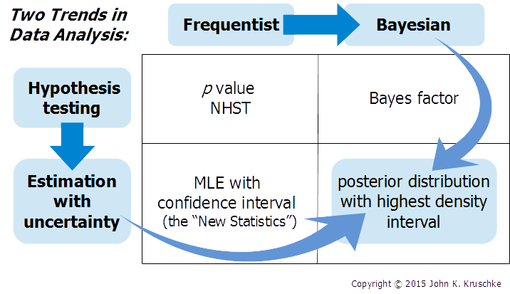
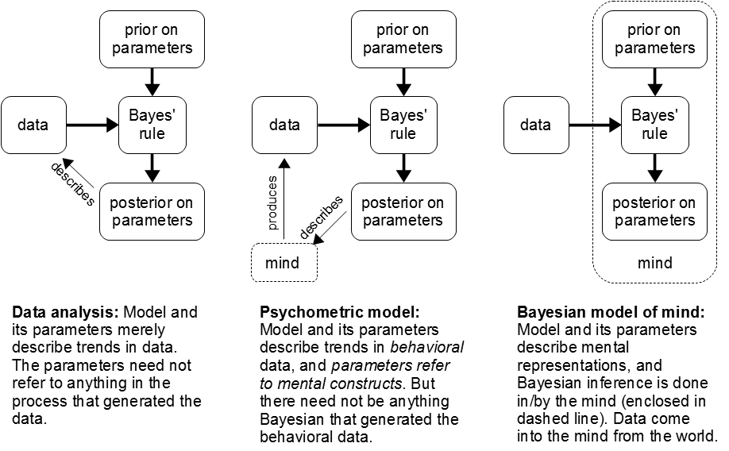

Who is the instructor?
Who is the instructor?
Bayesian Data Analysis
|
 |
Many fields of science are transitioning from null hypothesis significance testing (NHST) to Bayesian data analysis. Bayesian analysis provides rich information about the relative credibilities of all candidate parameter values for any descriptive model of the data, without reference to p values. Bayesian analysis applies flexibly and seamlessly to complex hierarchical models and realistic data structures, including small samples, large samples, unbalanced designs, missing data, censored data, outliers, etc. (More about why to go Bayesian is described below.) This tutorial shows you how to do Bayesian data analysis, hands on, with free software called R and JAGS. The tutorial will use new programs and examples.
This tutorial is offered through the Cognitive Science Society, convened in Pasadena, California. Registration is required and links are provided below.
Tutorial Objectives: You will learn
Tutorial Audience: The intended audience is graduate students, faculty, and other researchers, from all disciplines, who want a ground-floor introduction to doing Bayesian data analysis.
Tutorial Prerequisites: No specific mathematical expertise is presumed. In particular, no matrix algebra and no calculus is used in the tutorial. Some previous familiarity with statistical methods such as a t-test or linear regression can be helpful, as is some previous experience with programming in any computer language, but these are not critical.
Schedule of Topics: (Exact content, ordering, and durations may change.)
|
A brief video that describes Bayesian estimation for comparing two groups, and how Bayesian estimation supersedes the t test. See also this introductory chapter. |
John Kruschke is eight-time winner of Teaching Excellence Recognition Awards from Indiana University, where he is Professor of Psychological and Brain Sciences, and Adjunct Professor of Statistics. He has written an acclaimed introductory textbook on Bayesian data analysis and many tutorial articles. He has given numerous popular workshops on Bayesian methods. His research interests include the science of moral judgment and Bayesian data analysis. He received the Troland Research Award from the National Academy of Sciences, and the Remak Distinguished Scholar Award from Indiana University. He has been on the editorial boards of several scientific journals, including Psychological Review, the Journal of Experimental Psychology: General, the Journal of Mathematical Psychology, and others.
Doing Bayesian Data Analysis, Second Edition: A Tutorial with R, JAGS, and Stan. The book is a genuinely accessible, tutorial introduction to doing Bayesian data analysis. The software used in the tutorial accompanies the book, and many topics in the tutorial are based on the book. (The tutorial uses the second edition, not the first edition.) Further information about the book, and a publisher's discount, can be found here.
Register with the Cognitive Science Society.
This tutorial is offered through Cognitive Science Society. You must register to attend. Complete registration and contact information is at this link. The instructor has no control of fees or registration procedure.
 Install software before arriving.
Install software before arriving.
You are encouraged to bring a notebook computer to the tutorial, so you can run the programs and see how their output corresponds with the presentation material. Please install the software before arriving at the tutorial. The software and programs are occasionally updated, so please check here a week before the tutorial to be sure you have the most recent versions. For complete installation instructions, please refer to this web page.
|  |
| Two historical trends in data analysis, that converge on the methods presented in this workshop Manuscript here. (NHST = null hypothesis significance testing. MLE = maximum likelihood estimation.) |
Sciences from astronomy to zoology are changing from null-hypothesis significance testing to Bayesian data analysis, because Bayesian analysis provides richer information with great flexibility and without need for p values. Read more:
*Your click on this link constitutes your request to the author for a personal copy of the article exclusively for
individual research.
|  |
| Read more at this blog entry. |
Data analysis involves "generic" descriptive models
(such as linear regression) without any necessary interpretation as
cognitive computation. The rational way to estimate parameters in
descriptive models is Bayesian, regardless of whether or not Bayesian
models of mind are viable. The concepts and methods of Bayesian data
analysis transfer to other Bayesian models, including Bayesian models
of cognition. Read more at this blog entry.